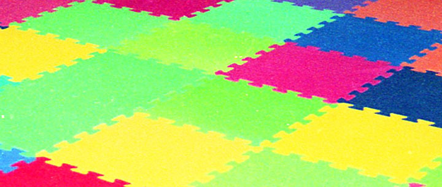

ホイルンのこと

1998年の8月、親戚が日本からシンガポールに移住したので、その家に遊びに行ったことがある。僕にとって初の海外旅行だった。
シンガポールの親戚宅に数日間泊まらせてもらって、近所のプールに遊びに行ったり、ナイトサファリに行ったり、ショッピングモールに行ったりして、とにかく楽しかった。
僕はこの時「マーライオンタワー」を見学して、それこそが「マーライオン」だと思っていたので、どうしてマーライオンが「ガッカリ観光地」と言われているのかよく分かっていなかった。「上まで登れておっきくて楽しかったよ！？」と言うと話が噛み合っていなくて戸惑っていた。後に、本当のマーライオンは公園にあるちっちゃいヤツなんだと知り、「そりゃ確かにガッカリだ」と知るのであった。
- 参考 : 【閉鎖】マーライオン・タワー The Merlion Tower / マーライオン@セントーサ島 ｜ シンガポール観光
- 僕が登ったマーライオンタワーは、2019年に閉鎖されてしまっていた。コッチこそ残すべきだろ…ｗ
そんな親戚の家には、住み込みの家政婦さんがいた。名前はホイルン。海外の女性で、日本語はほぼ喋れない人だった。年齢はいくつぐらいだったのだろう。写真を見返すに、30歳前後じゃなかろうかと思う。
後に両親などから聞いたところによると、出稼ぎに出てきていた人らしい。それがシンガポール国外からなのかどうかなど、詳細はよく分からないが、家族を養うために住み込みで家政婦をしていたそうである。そんな事情を聞いたのか、その親戚の親父さんは、「ウチの者が世話になっているから」と、いくらか渡したりもしたことがあるらしい。色々と又聞きで、どこまで合ってるか分からないけど。ｗ
幼かった僕や弟などは、ホイルンが日本語を喋れなかったこともあり、居候中ほとんど話をすることはなかったと思う。それでも、食事の支度をしている時なんかに「スプーンをどうぞ」「ありがとう」とか、そんな程度のやり取りはちょっとした記憶がある。
そんなモンで、僕は別に絡みがあったワケではないのだが、シンガポールというといつもホイルンのことを思い出すのである。
彼女はどんな人だったのだろうか。今も元気に過ごしているだろうか。あの時もしクソガキが無礼なことをしていたらごめんなさい。
ホイルンの平穏無事を祈っています。